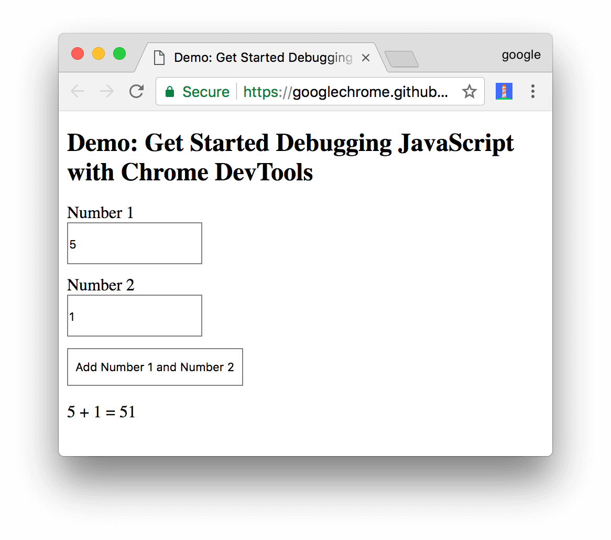
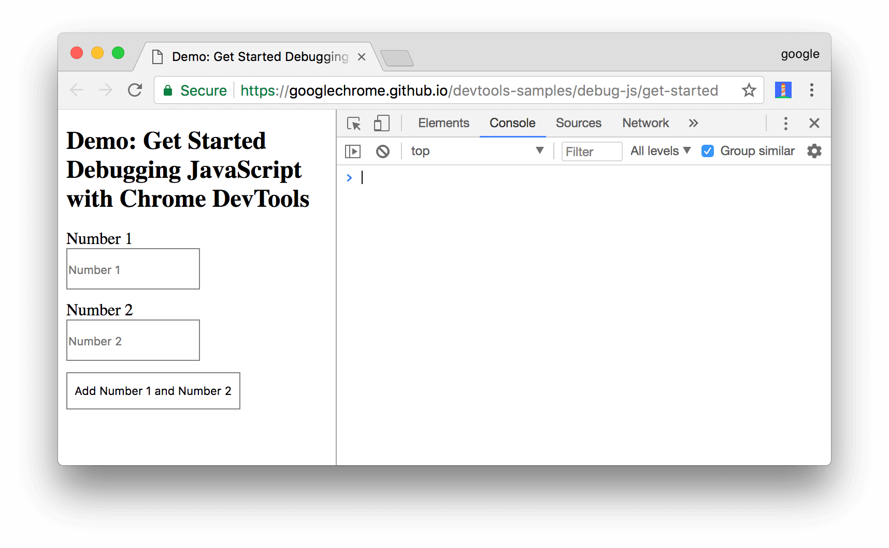
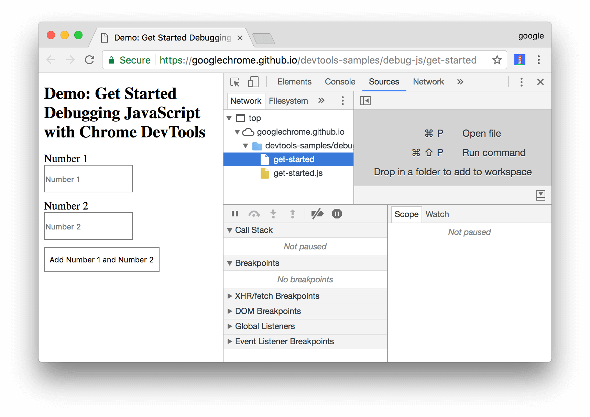
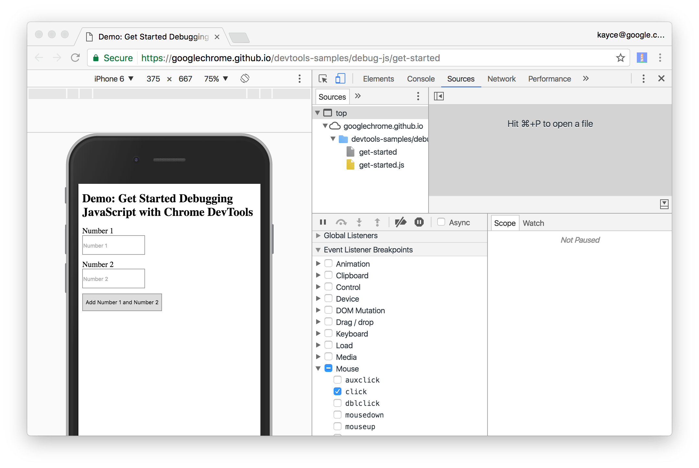

Debugging in Chrome
Step 1: Reproduce the bug
DEMO
Step 2: Get familiar with the Sources panel UI
Step 2: Get familiar with the Sources panel UI
Step 2: Get familiar with the Sources panel UI

Step 3: Pause the code with a breakpoint
function updateLabel() {
var addend1 = getNumber1();
console.log('addend1:', addend1);
var addend2 = getNumber2();
console.log('addend2:', addend2);
var sum = addend1 + addend2;
console.log('sum:', sum);
label.textContent = addend1 + ' + ' + addend2 + ' = ' + sum;
}
Step 3: Pause the code with a breakpoint
Step 4: Step through the code
if (inputsAreEmpty()) {
Step 5: Set a line-of-code breakpoint